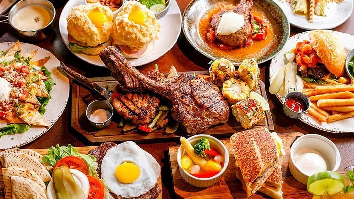

Our Signature Recipes
Espresso
- Use freshly ground dark-roast coffee beans.
- Brew under high pressure using an espresso machine.
- Serve in a small cup with rich crema on top.
Cappuccino
- Pull one shot of espresso.
- Add equal parts steamed milk and milk foam.
- Top with cocoa powder or cinnamon if desired.
Latte
- Combine one shot of espresso with steamed milk.
- Top with a thin layer of milk foam.
- Optional: Add vanilla or caramel syrup.
Muffins
- Mix flour, sugar, eggs, milk, and your choice of flavor (chocolate, blueberry, etc.).
- Pour into muffin trays and bake until golden brown.
- Let cool before serving warm.
Bagels
- Prepare dough with yeast, flour, salt, and sugar.
- Boil each bagel briefly, then bake until golden.
- Serve toasted with cream cheese or fillings.
Grilled Veggie Sandwich
- Grill zucchini, bell peppers, and onions.
- Layer on toasted sourdough with pesto and cheese.
- Grill or press the sandwich until golden.
Margherita Pizza
- Spread tomato sauce on pizza dough.
- Add fresh mozzarella and basil leaves.
- Bake in a hot oven until crust is crisp and cheese melts.
Paneer Wrap
- Sauté paneer with onions, peppers, and spices.
- Wrap in a tortilla or paratha with sauces and salad.
- Serve warm, optionally grilled.
Veggie Burger
- Form a patty using mashed veggies and breadcrumbs.
- Pan-fry until crisp.
- Assemble in a bun with lettuce, tomato, and sauces.
Chicken Panini
- Layer grilled chicken, cheese, and vegetables in ciabatta bread.
- Grill in a panini press until crispy.
- Serve hot with dip or chips.
Grilled Chicken Salad
- Grill chicken breast with seasoning.
- Serve on a bed of lettuce, cherry tomatoes, and cucumbers.
- Top with vinaigrette or ranch dressing.
BBQ Chicken Pizza
- Spread BBQ sauce on pizza base.
- Top with grilled chicken, onions, and cheese.
- Bake until the crust is golden and cheese is melted.
Spicy Chicken Wrap
- Sauté chicken in a spicy marinade.
- Wrap with lettuce, onions, and sauces in a tortilla.
- Grill lightly before serving.
Garlic Bread
- Slice baguette and spread with garlic butter.
- Bake or toast until golden and crisp.
- Optionally add cheese and herbs.
Cheesy Nachos
- Layer tortilla chips on a tray.
- Top with shredded cheese and bake until melted.
- Serve with salsa, guacamole, and sour cream.
French Fries
- Cut potatoes into thin strips.
- Fry until golden brown and crispy.
- Sprinkle with salt or seasoning.
Chicken Nuggets
- Coat chicken pieces in batter or breadcrumbs.
- Deep-fry until golden and cooked through.
- Serve with dipping sauces.
Chocolate Muffin
- Use a chocolate batter with cocoa powder and chocolate chips.
- Bake in muffin trays until fluffy and rich.
- Serve warm with chocolate drizzle.
Strawberry Cheesecake
- Prepare a graham cracker crust.
- Fill with cream cheese, sugar, and eggs mixture.
- Top with strawberry glaze and chill before serving.
Brownie with Ice Cream
- Bake fudgy brownies with rich chocolate batter.
- Serve warm with a scoop of vanilla ice cream.
- Drizzle with hot chocolate or caramel sauce.
Lemon Tart
- Prepare a buttery tart crust.
- Fill with lemon curd (eggs, lemon juice, sugar).
- Bake and cool before serving with powdered sugar.
Back to Top
← Back to Home